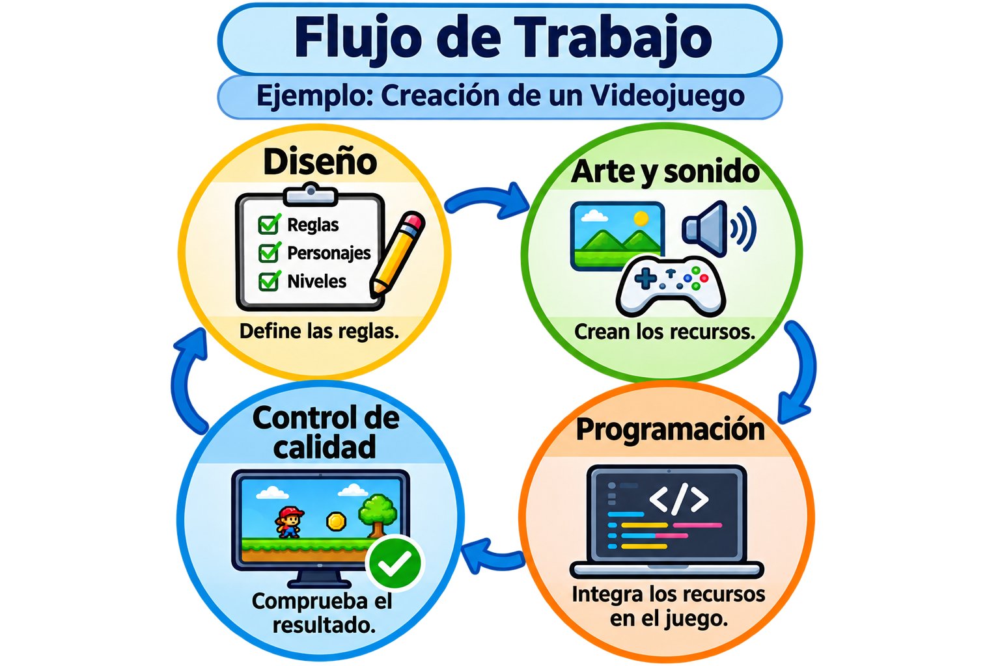

Proceso de desarrollo
Quién hace qué en un videojuego
Crear un juego implica coordinar decisiones de diseño, programación, arte, sonido, pruebas y producción. En proyectos pequeños, una persona puede asumir varias funciones.
- Diseño de juego
Define las reglas y el reto. También organiza la dificultad y el ritmo de los niveles. - Programación
Implementa los controles, las colisiones y las reglas del juego. También investiga fallos y mejora el rendimiento. - Arte y animación
Crea personajes, escenarios e indicadores. Prepara movimientos y señales visuales para que el jugador reconozca lo que está ocurriendo. - Sonido
Diseña señales auditivas y trabaja en la ambientación del nivel. - Control de calidad (QA)
Reproduce y documenta problemas. Registra los pasos necesarios para que el equipo pueda repetir el fallo. - Producción
Organiza las tareas y coordina el trabajo entre áreas para que el equipo pueda probar versiones completas del juego.
Cómo colaboran las áreas
Diseño define las reglas y prioridades del nivel. Arte y sonido preparan los recursos, programación los integra y control de calidad comprueba que las acciones del jugador produzcan el resultado esperado.
Producción organiza qué tareas dependen de otras. El equipo puede usar recursos provisionales para probar una mecánica mientras se completa el arte definitivo.
Cómo se documenta un error
Un reporte identifica la versión del juego y el dispositivo, enumera los pasos para reproducir el fallo y describe el resultado esperado y el observado. Una captura o un registro del sistema puede ayudar a localizar la causa.
Cuando programación entrega una corrección, control de calidad repite la prueba y revisa las funciones relacionadas para detectar posibles efectos secundarios.

De una tarea a una versión jugable
Un cambio en el menú de pausa permite ver cómo se coordina el equipo durante una entrega.
- Planificación. Producción acuerda qué opciones entran en la próxima versión. Diseño define las acciones y arte prepara los botones y sus estados.
- Integración. Programación conecta los botones con sus acciones y verifica que abrir el menú detenga la partida y que cerrarlo la reanude.
- Revisión. Control de calidad prueba el menú con los mandos previstos. El equipo prioriza los fallos que impiden continuar y vuelve a probarlos cuando estén corregidos.